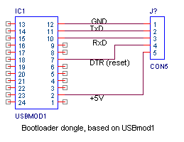
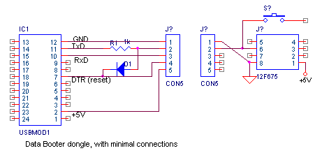
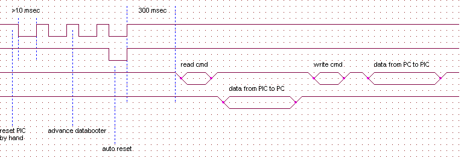

Bootloader / DataBooter
Introduction
If you've ever developped a PIC application with a bootloader-tool, you'll always want to use such a bootloader-tool.
Unfortunatly, a bootloader can only be used by PICs that can program themselfs (i.e. the larger PICs).
Still there's a need even for the smaller devices to change functionality in an easy way. So even if only the eeprom data section of a PIC could be changed by a bootloader this would be a welcome feature in some projects, in this document I'll call such a tool a DataBooter.
BootLoader
For the bootloader I always use Shanies ...

DataBooter
Because the databooter is especially meant for the smaller PICs, it should be designed with the following constraints
So looking at the PIC, there are the following possibilities
The minimum connection could be just 1 pin (plus Ground). It's even possible to use this pin as an input during normal operation. So the simplest solution would look something like this:

Ofcourse there's one restriction on both using a pin for data-booting and also for normal functions, during data-booting it must be high impedance.
The function of D1 and R1: The PIC must be reset by turning the power on. Then the PIC should detect a recognizable signal at the "TxD" pin. The easiest to detect is a long puls. On windows PC's (and certainly if a USB-module is used) it's not easy to explictly control the TxD line, but the DTR line can be easily controled. So the DTR line is both used to reset devices that can be reset and to generate a long pulse to synchronize devices that have only 1 input pin to communicate.

F1 = transport data from PIC to PC
F9 =